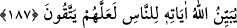

belirtmiştir. Fakat bir kimse, başka birinin ismini zikredip ona seslenmeyi kasdetse ve
kendisine icâbet olunmasa, suç kendisinindir. Çünkü icâbete güç yetirebilecek olana
nidâ etmeyip, o an kendisine galip gelen bir hal ile hayâlî sıfatların ortaya çıkardığı bir
şeye yönelmiştir. Buna rağmen kulun, Rabbına olan hüsn-i zannı sebebiyle ve ilâhî bir
beraberlik sâyesinde, duâsı tamamen karşılıksız kalmaz. Bilakis meyvesini verir.
Allah’a eksik ve hatalı bir tarzda yönelen kişi, hata yapan müctehid gibi, bir cihetle ecir
ve karşılık bularak tamamen mahrûm kalmaz. Fenârî’nin sözü burada bitti.
Kuşeyrî Risâlesi’nde kaydedilen bir haber şöyledir: Allah’ın sevdiği bir kul O’na duâ
edince Allah Teâlâ Cebrâîl (a.s.)’a: “Ey Cebrâîl, bu kulumun isteğini geciktir. Çünkü
ben onun sesini dinlemek istiyorum.” der. Allah’ın buğzettiği bir kul O’na duâ edince
de: “Ya Cebrâîl, şu kulumun ihtiyacını gideriver. Çünkü onu dinlemek hoşuma
gitmiyor.” buyurur.[105]
Rasûlullah (s.a.) şöyle buyurmuştur: “Dünyânın düzeni şu dört şeyle mümkündür.
Âlimlerin ilmi, âmirlerin adâleti, zenginlerin cömertliği ve fakirlerin duâsı.” Allah’a
esmâ-i hüsnâsı ile yalvarmamız, selef-i sâlihîn’den nakledilen duâlarla duâ etmemiz ve
peygamberleri, evliyâyı ve sâlihleri Allah’a duâya vesîle edinmemiz gerekir. Duânın
kabûl olunması umulan yerler ve zamanlar vardır. Bunlar, Kâbe’yi ve üç mescidi
(Mescid-i Harâm, Mescid-i Nebî ve Mescid-i Aksâ) görünce, tavâfta Mültezem’in
yanında, Kâbe’nin içinde, Zemzem kuyusunun yanında ve zemzem içerken, Safâ ve
Merve tepesinde sa’y ânında, makâm-ı İbrâhîm’in arkasında, Arafât’ta, Müzdelife’de,
Mina’da şeytan taşlama ânında ve peygamberlerin kabirleri yanında yapılan duâlardır.
Peygamberimiz (a.s.)’ın kabri dışında hiçbir peygamberin kabri sağlıklı olarak belli
değildir. İbrahim (a.s.)’ın kabri ise Kâbe’de sûr içinde belli olmayan bir yerdedir.
Ehlince bilinen şartlar doğrultusunda, sâlihlerin kabirleri yanında da duâya icâbet
olunduğu tecrübe edilmiştir.